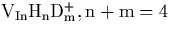
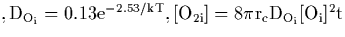
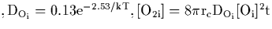

Next: List of Figures
Up: Chris Ewels' PhD Thesis
Previous: List of Published Papers
-
- Parameters for the correlation energy per electron given in
Equation 2.5.16. Taken from
Reference [21].
- Parameters for the exchange-correlation energy used in
AIMPRO, see Equation 2.5.19.
- Physical interpretation of the coefficients in
Equation 2.8.34, see schematic diagram,
Figure 2.3.
- Properties of the O2 molecule. AIMPRO values are obtained
using the standard basis set described elsewhere in the thesis,
i.e. six Gaussian fitting functions on each O atom for charge
density, 24 for wavefunction, with three more Gaussian functions on the
bond centre for charge density and two for the wavefunction. All
non-AIMPRO values from [43].
- Parameters for Musgrave-Pople Potential for InP in
eV/Å2, r0= 2.421
- Phonon frequencies for pure InP (cm-1)
- Calculated LVMs for the fully hydrogenated vacancy in InP,
. Note that *: IR Inactive, T:
Triplet, D: Doublet
- Local vibrational modes (cm-1), symmetry, and calculated bond
lengths (Å) of hydrogenated vacancies in InP
*: IR Inactive, T: Triplet, D: Doublet
- Calculated and Experimental LVMs for H passivated Be in InP
(cm -1)
- Local vibrational modes of H-passivated Mg,Be in InP and
GaAs, with H in the BC or AB site neighbouring the P/As (all modes in
cm-1) - figures in brackets show drop with D isotope). The lower
wag-type modes are doublets, the higher stretch mode a
singlet. Clusters are 87 atoms unless specified otherwise.
- Calculated and Experimental Frequencies, cm-1, of LVMs
of VOn defects - isotope values show downwards shift of the modes
with shifting isotope. a,b,c for VO3 refer to
Figure 5.4.
- LVMs associated with Oi-Os, the pre-cursor to
O2iV. All modes are in cm-1, later columns show downwards
shift as isotopes are changed as listed.
- Theoretical and Experimental Properties of Oi. The Si-O
length is in Å and the Si-O-Si angle in degrees.
- Experimental and calculated diffusion barriers for Oi (eV)
- Local vibrational modes of Oi (cm-1). Experimental
results from
References [153,154,77,155] (LHeT).
Figures in square brackets are determined
indirectly [155]. All except first row show the
downward shift with change in isotope. Theoretical results are new to
this work. The split in theoretical results are slight numerical
variation due to cluster assymetry. Atomic motion associated with
each mode is shown in Figure 6.3.
- LVMs for the dimer (cm-1). Isotopic values show
downwards shift for change in isotope. The assymetric dimer is more
stable than the symmetric one by 0.259 eV. Where mixed isotope
results are listed, the first isotope refers to the `inner' atom of
the assymetric dimer. Calculated intensity is the dipole moment
squared for the 16O case for the given mode, divided by that of
the 921.3cm-1 mode. The `symmetric dimer' was not symmetry
constrained and slight variations in position account for the
difference between the 16O18O and the 18O16O
values.
- Natural dimer concentration as a function of temperature, T, or
anneal time, t, assuming no dimer dissociation.
![$\rm [O_i]=10^{18}
cm^{-3}, r_c=4~$](img267.gif) Å. For variable temperature data anneal time is set
to 1 hour, for variable anneal time the temperature is set to
450
Å. For variable temperature data anneal time is set
to 1 hour, for variable anneal time the temperature is set to
450 C. Also included is the equilibrium dimer concentration at
various temperatures assuming a binding energy of 0.3 eV.
C. Also included is the equilibrium dimer concentration at
various temperatures assuming a binding energy of 0.3 eV.
- LVMs and isotope shifts (cm-1) for the trimer in the
 110
110 linear chain structure, and shared central Si `Manx'
structure. The `Manx' structure is 0.248 eV more stable.
linear chain structure, and shared central Si `Manx'
structure. The `Manx' structure is 0.248 eV more stable.
- Calculated and Observed LVMs, cm-1, due to the NNO
defect in Si. Isotopic values show drop in modes when different
atomic isotopes are used. For modes where primarily one atom is
moving, this atom is given in the first column of the table (numbering
refers to Figure 7.4).
- Local vibrational modes (cm-1) for various
(Ni)n-(Oi)m defects in Silicon. Later columns show
the drop in frequency with the change of isotope. For NNOO the second
N and O atoms are the ones in the defect centre.
- Local vibrational modes of NiO2i (cm-1) - later
columns give downwards shift in modes with change of isotope.
- Calculated energy difference (eV) between the NNO and NON
structures, using the PM3 cyclic cluster method and AIMPRO in the
neutral(0) and positive(+1) charge state. Positive numbers show NNO
to be more stable. The * indicates NON(0) spontaneously
restructures into NNO(0) with no barrier.
- Vibrational modes of the (CH)iO4i defect (cm-1).
Later columns show downward shift in mode with isotope change.
- Average effective C2v strain coupling tensor for the NL8
signal, heat treated under 600MPa stress at 460C
[236]
- Vibrational modes (cm-1) and associated absorption
intensities for the di-y-lid thermal donor model. Stronger modes are
picked out in bold. Second section shows shift with isotope for the
di-y-lid thermal donor model, and the experimentally observed values
for TD2 and TD3 (room temperature).
- Vibrational modes of the 5Oi TD model (cm-1),
IR-active modes are given in bold. Last column gives the associated
absorption intensity of each mode (dipole moment squared).
- Vibrational modes of the alternative 4Oi `flanked square'
TD model (cm-1), IR-active modes are given in bold. Last column
gives the associated absorption intensity of each mode (dipole moment
squared).
- Vibrational modes of the Snyder-Stavola 3O TD model
(cm-1). Last column gives the associated absorption intensity of
each mode (dipole moment squared).
- Vibrational modes of a `partially dissociated' 3O TD model
(cm-1). Last column gives the associated absorption intensity of
each mode (dipole moment squared).
- Vibrational modes (cm-1) of the NL10(Al) proposed structure, a
`di-y-lid' with centrally substituted Al. Also included is the dipole
moment squared for the 16O higher modes, which is proportional to
absorption intensity.
- Number of thermal donor structures possible with a fixed
common core and Oi adding in two linear tails, one either side of
the core. The defect is assumed symmetric. The table lists number of
isomeric combinations possible for a given tail length, and cumulative
total. There are 13 experimentally observed TDs after TD3.
Chris Ewels
11/13/1997